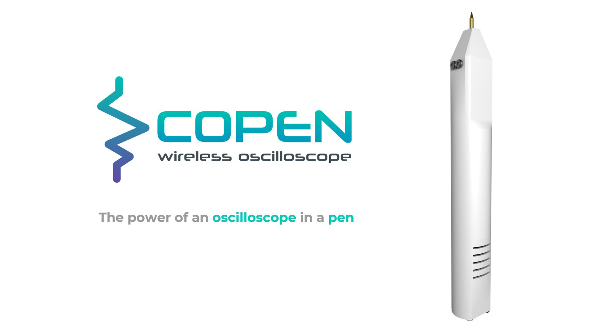
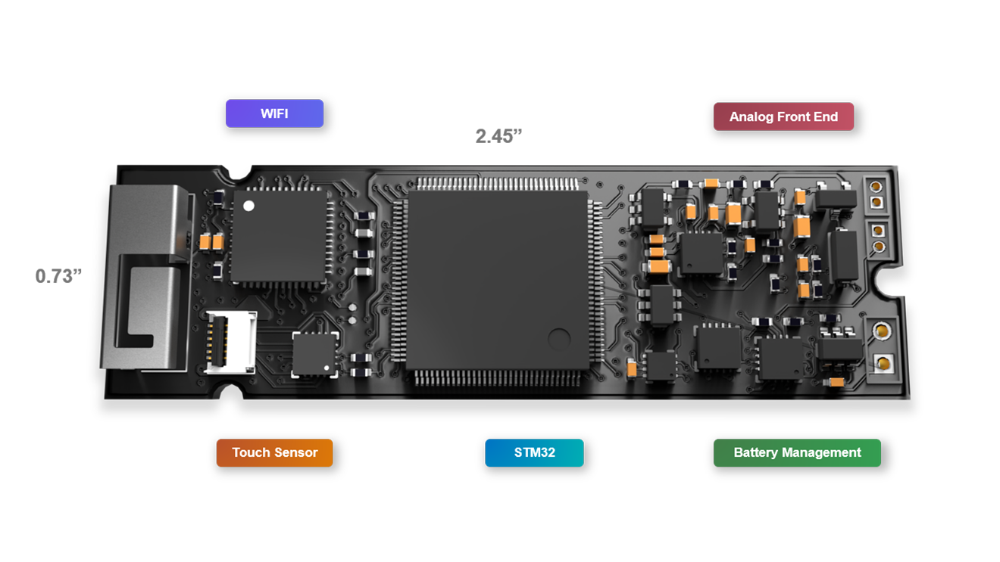
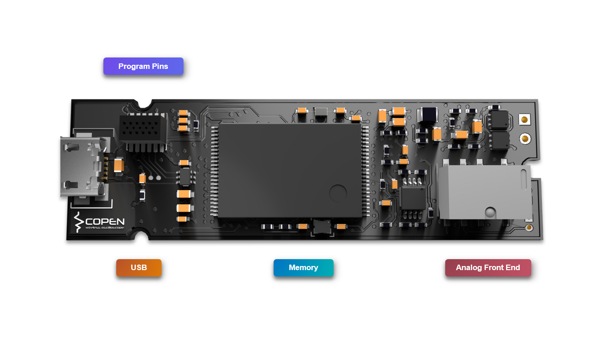
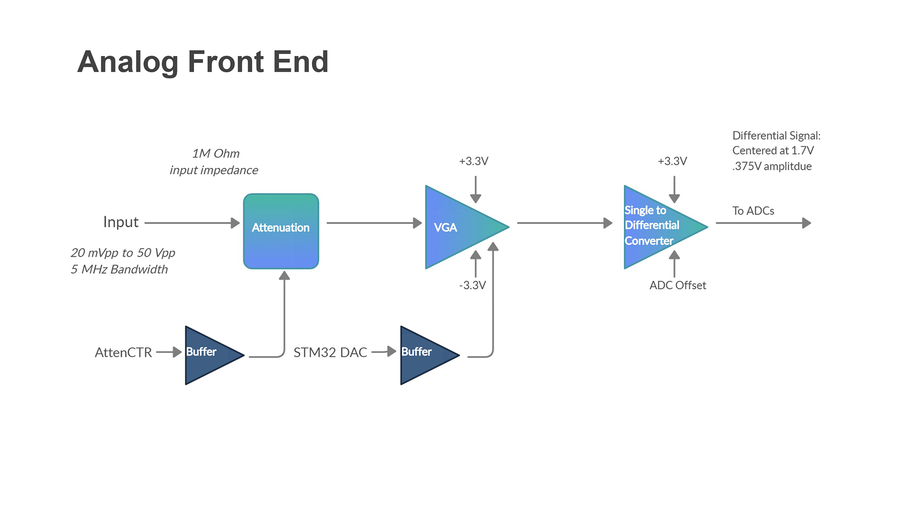
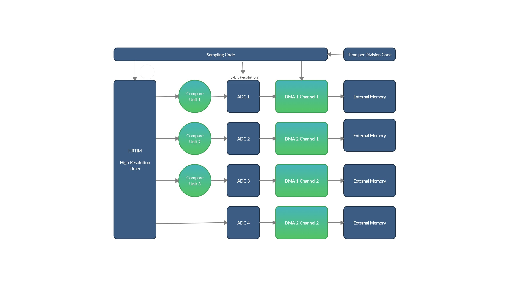
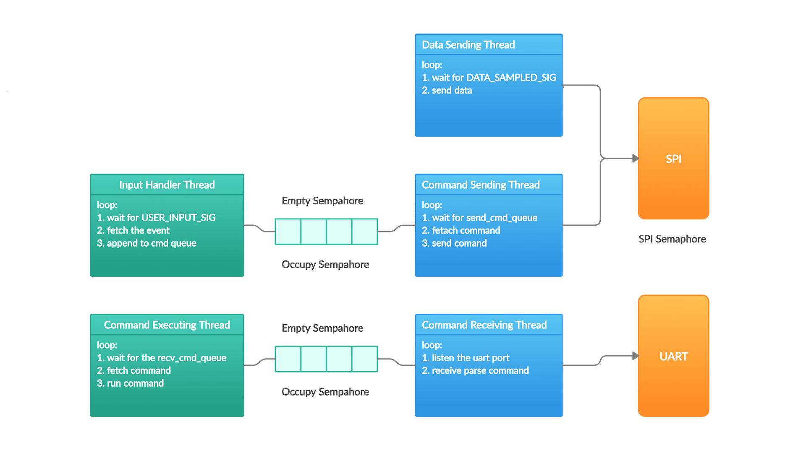
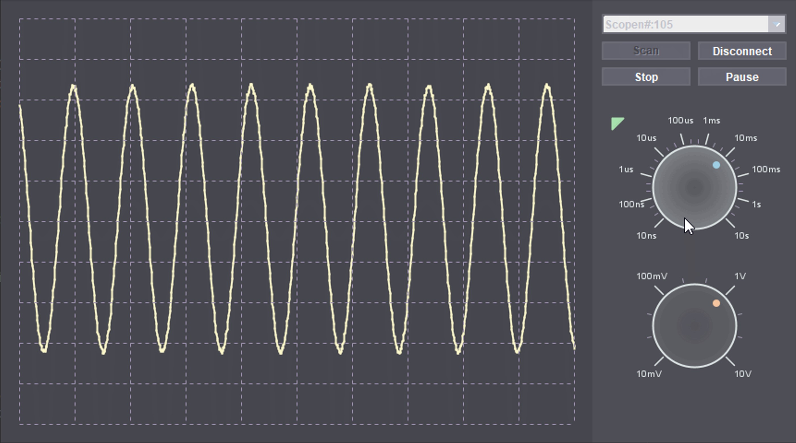
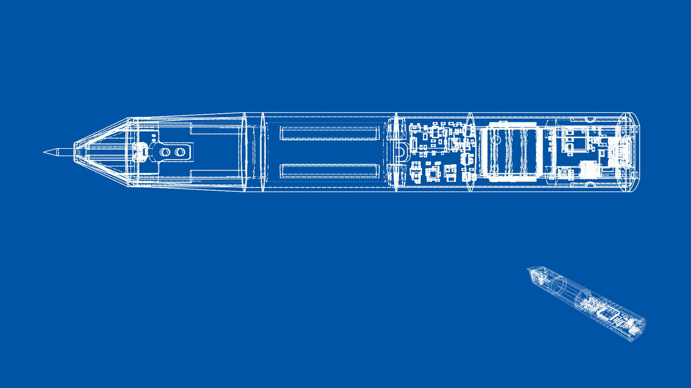

From bench equipment to a portable system.
Our goal was not to reproduce every feature of a laboratory oscilloscope. We focused on the essential loop: condition the analog input, sample it reliably, move the data without blocking the system, and make the waveform clear in the desktop interface.
The complete product had to be small enough to hold like a probe and simple enough to assemble ourselves.

Two systems, one very narrow board.
The analog front end isolates and scales the incoming signal. The controller side samples that output, stores data in external SRAM, reads touch input, and manages the wireless link.
Placing components on both sides of a six-layer PCB gave the complete electrical system a footprint smaller than a stick of gum.



Keep sampling deterministic. Move everything else around it.
Interrupt timing was not predictable enough for the sampling requirement. We used the STM32 high-resolution timer to trigger the ADC directly, then DMA moved each completed buffer into external SRAM.
Five FreeRTOS tasks separated communication from product logic. Semaphores protected the shared SPI interface and coordinated the data queues.


Make the system feel like an instrument.
The Java desktop client follows a model-view-controller structure and draws the instrument controls directly. A dark interface keeps the waveform visually dominant.
We modeled the enclosure in Fusion 360, printed it, and assembled the full system to test the interaction at product scale, not only on the bench.

